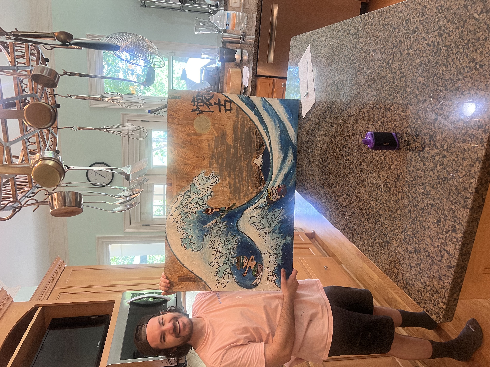
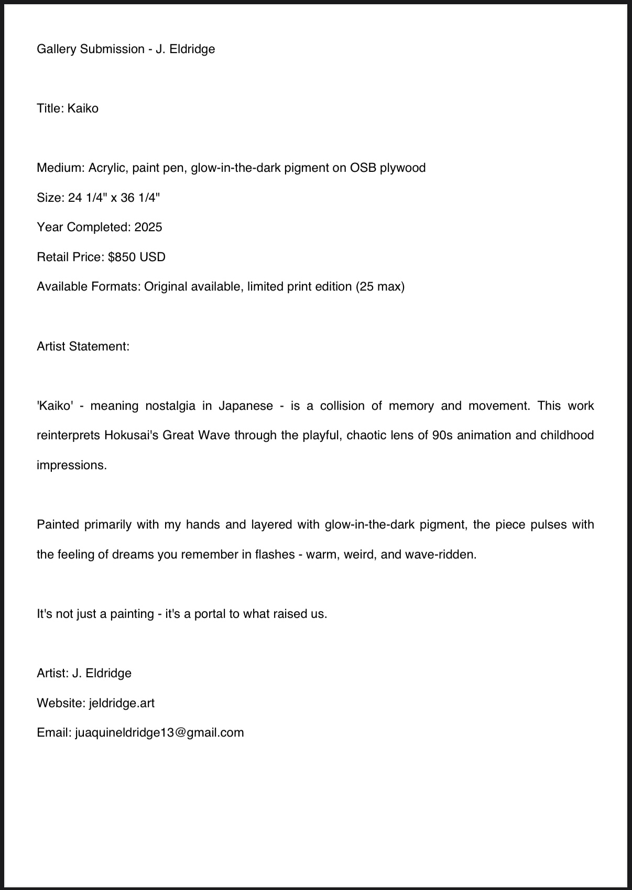
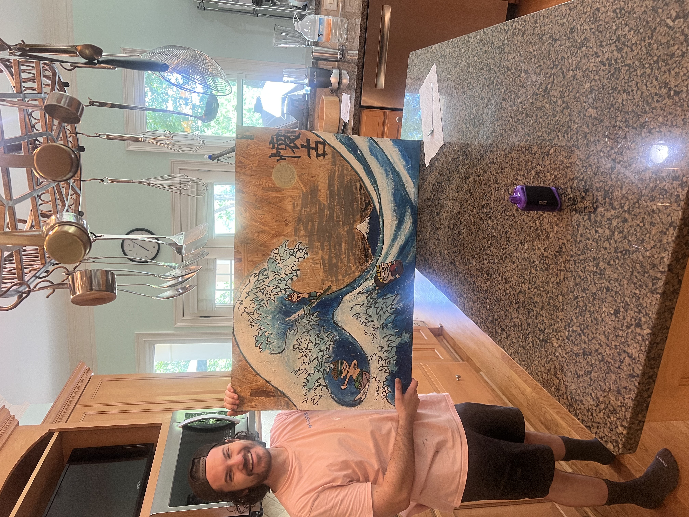
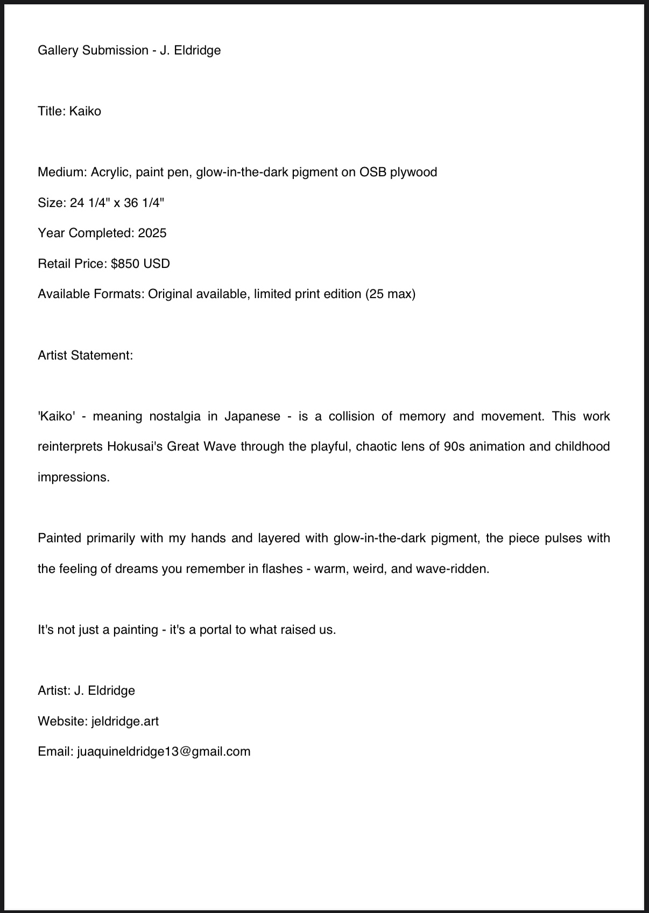

Kaiko (懐古)
Medium: Acrylic, glow paint, OSB board
Size: 24¼" x 36¼"
Year: 2025
A chaotic surf between tradition and nostalgia. Painted almost entirely with fingers, topped in glowing white, outlined with bold ink — it’s a time portal in plywood.
 



Price: $2,500.00
Availability: Original Available